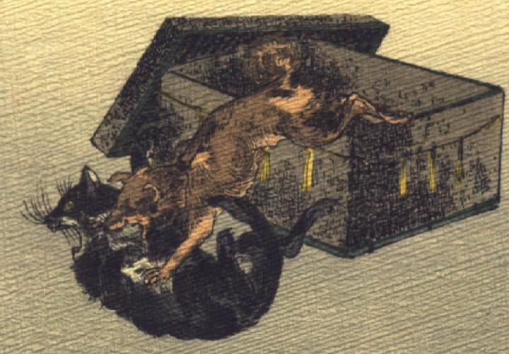

しっぺい太郎に襲われる化け猫。長持から飛び出したしっぺい太郎に首元を噛み付かれて、黒毛で腹が白い猫がひっくり返っている。猫の体の大きさは犬と同じくらいである。長持の側面には注連縄のようなものがはりめぐらされている。
著作者：J.Dautremer／出典：親書誌：U426_nichibunken_0102：Sippeïtaro／日付：2006／資源識別子：U426_nichibunken_0102_0004_0000
Copyright (c)2010- International Research Center for Japanese Studies, Kyoto, Japan. All rights reserved.